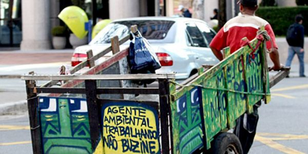

 Colabora com o meio ambiente Reduz custos do município Ajuda a melhorar a vida de catadores Desperdício Poluição Problemas de lixo em locais errados como rios, mares, praias Maior responsável pela dengue no Brasil Assista esse documentário